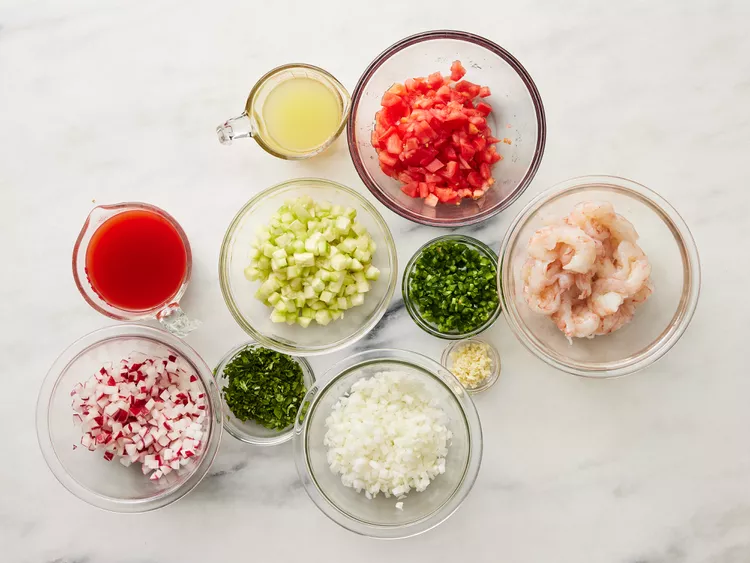
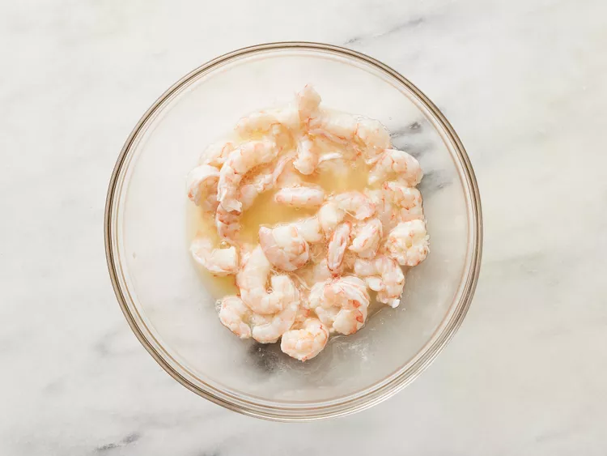
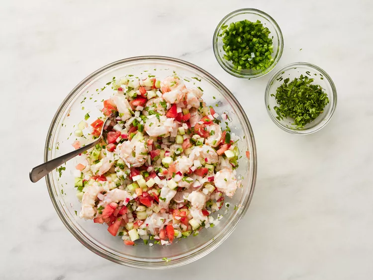
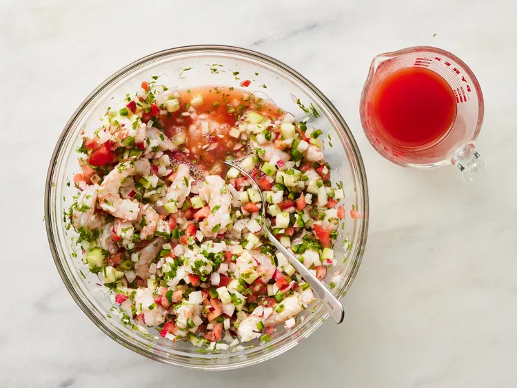

Learn how to make ceviche with this recipe for a traditional Mexican version. I've had it several times in Mexico, and have also learned to cook Mexican food for my husband. Every time I make this it's a hit.
Gather all ingredients.
Place shrimp in a bowl. You may either coarsely chop the shrimp, or leave them whole, depending on your preference. Add lemon juice, covering shrimp completely. Cover and refrigerate for 30 minutes, or until opaque and slightly firm.
Add onions, tomato, cucumber, radishes, and garlic; toss to combine. Gradually add jalapeño and cilantro to desired taste (jalapeño will grow stronger while marinating). Stir in tomato and clam juice cocktail to desired consistency.
Stir in tomato and clam juice cocktail to desired consistency.
Cover and refrigerate for 1 hour. Serve chilled with tortilla chips.
Return to top